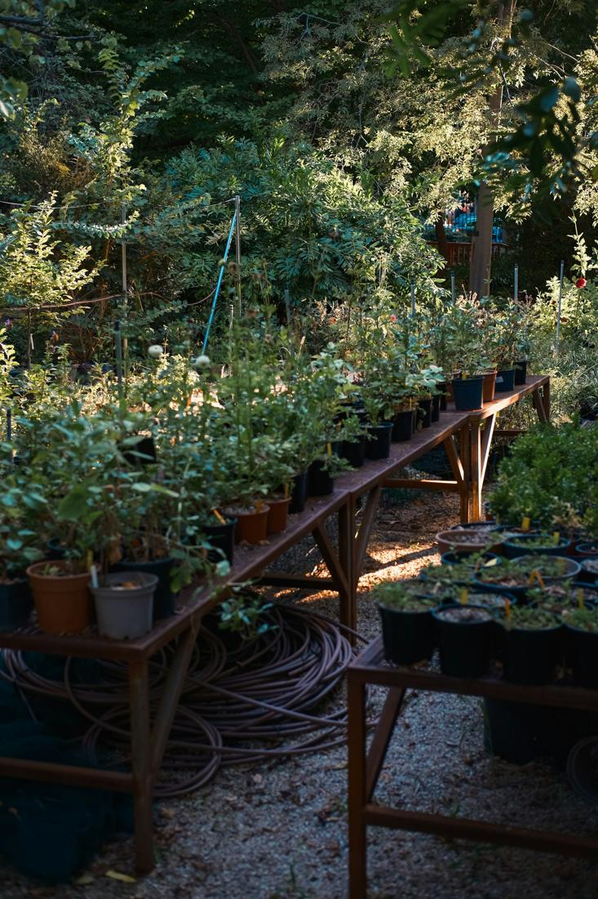
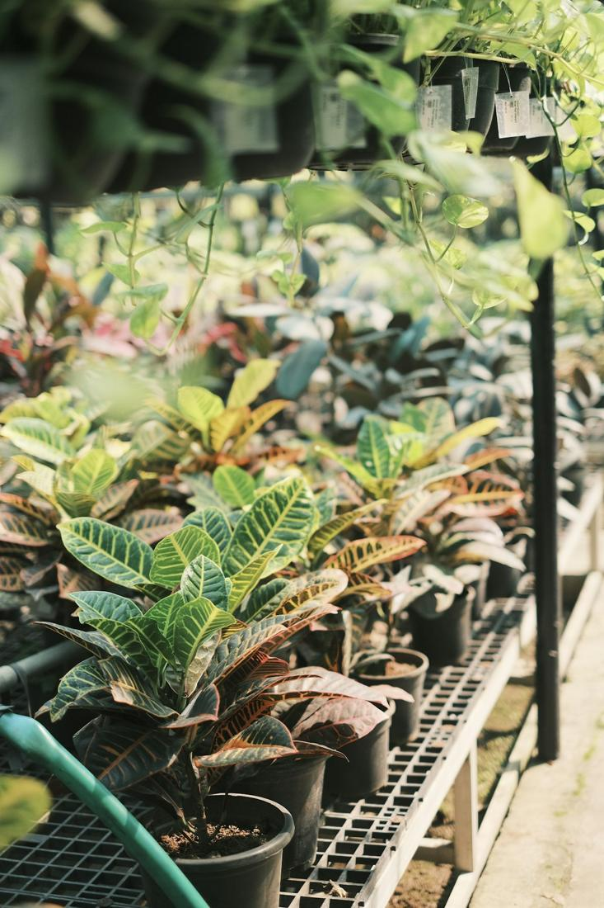

Tanaman yang betah di rumahmu.
Dari monstera buat sudut ruang tamu sampai benih tomat buat balkon, semuanya ada di rak kami di Jl. Gaharu I, Cipete. Media tanamnya kami racik sendiri, dan yang jawab WhatsApp ya orang yang tiap hari ngurus tanamannya.
Lihat semua produk
Jl. Gaharu I No. 7 · tutup jam 5 sore
Yang ada di rak kami.
- Tanaman hias
- Benih & bibit
- Media tanam racikan sendiri
- Pupuk & nutrisi
- Pot & tatakan
- Alat berkebun
- Gratis ongkir sekitar Cipete
Angka dari etalase Tokopedia.

- rating di Tokopedia
- 5.0
- ulasan pembeli
- 23,6 rb
- produk terjual
- 205 rb+
- sekitar Cipete
- Gratis ongkir
Mulai dari rak yang mana?
Pilih satu rak. Harganya sama kayak di Tokopedia, stoknya bisa kamu tanya lewat WhatsApp.


Yang paling sering ditanyain.
Semua produkYang kami kerjakan tiap hari.
Tanaman yang sudah beradaptasi di Jakarta
Dirawat di Cipete, kena panas dan lembapnya Jakarta tiap hari, jadi nggak kaget waktu pindah ke rumahmu.
Media tanam racikan sendiri untuk aroid, sukulen, anggrek
Aroid mix, orchid mix, sekam, perlite, cocopeat. Kami aduk sendiri di toko, dan takarannya boleh kamu tanya.
Saran lewat WhatsApp dari orang yang ngurus tanamannya
Tanya stok, ongkir, atau kenapa daunnya menguning. Dibalas pas toko buka.
Cara belanja.
-
Pilih di rak atau di Tokopedia
Lihat-lihat di halaman produk kami atau langsung di etalase Tokopedia. Harganya sama.
-
Chat WhatsApp buat cek stok dan ongkir
Kirim nama produknya, kami cek stoknya dan hitung ongkir ke alamatmu.
-
Diantar sekitar Cipete, atau ambil di toko
Sekitar Cipete gratis ongkir. Mau ambil sendiri juga boleh, toko tutup jam 5 sore.
Catatan dari toko.
Semua tips
Main sebentar: Tunas & Hutan Lestari.
Bantu si Tunas manjat Hutan Lestari, kumpulin benih, terus tanam pohon. Rekormu kesimpan di browser ini.
Main sekarang